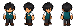

幫街坊搵返佢哋嘅包裹。睇單、揀貨、交貨，仲要抽空幫新貨上架。

正在準備店面素材…
選貨時仍會計時 · 方向鍵選擇，Enter 確認，Esc 返回
所有客人耐性及班次時間已停止。
WASD / 方向鍵：移動
E：接待、揀貨、上架、退回或交貨
手機：左下搖桿，右下互動按鈕
揀錯貨？帶返原貨架，按互動退回。
接下來係不限時上架時間。貨架位置及累計收入會保留到下一天；收貨清空後自動開門，也可提早開門。
你已完成一單提貨同一件新貨上架。正式班次會有排隊客人、耐性倒數及分批到貨。